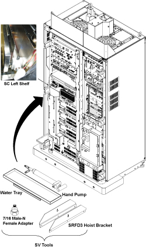

- 00000018WIA30778F20GYZ
- id_131075162.0
- Jul 19, 2019 11:00:39 AM
UPM- Body and Head Functional Check
Prerequisites
| Required persons | Preliminary requirements | Procedure | Finalization |
|---|---|---|---|
| 1 | Not Applicable | 15 minutes | 5 minutes |
| Item | Quantity | Effectivity | Part number | Manufacturer |
|---|---|---|---|---|
| Power Measurement Kit | 1 | - |
46-317724g1 or g2 | - |
| 25 KW 30 dB Attenuator (Dummy Load) | 1 | - |
46317724p14 | - |
| 50 Ohm Terminator | 1 | - |
46-265874p1 | - |
| 7/16Male -N Female Adapter (Attached in System Cabinet) | 1 | - |
5166139 | - |
| ||||
| Condition | Reference | Effectivity |
|---|---|---|
|
Properly calibrated RF Head, Body . | - | - |
About this task
The UPM Functional checks for 1.5T consist of three automated tests:
-
Peak Power, Pulse Width, Duty Cycle at TG=170
-
RF Inhibit test (Check that RF is disabled when inhibit condition)
-
Trip Test
All 3 automated tests must pass to ensure the correct operation of the Universal Power monitor system.
Run both Head and Body UPM Functional checks for the proper system type.
1.5T BODY UPM FUNCTIONAL CHECK
1.5T BODY UPM FUNCTIONAL CHECK Setup
Procedure
- Inhibit TR faults. Disable the Driver Module in the System Cabinet,Figure 1. Move switch 2 to the TR Disable position.
Figure 1. Driver Module Front Switches 
- Remove the Body RF cable from J4. Connect the RF dummy load
into J4. Use 7/16 Male - N Female Adapter attached in System Cabinet.Note:
If the body section of the 1.5T SRFD3 Max Power RF Output and Calibration procedure was just completed, configuration is the same. You can leave the head RF cable disconnected and body can keep the wattmeter in line. It will not change the outcome of the calibration.
Note:7/16Male -N Female Adapter is located at System Cabinet Left Shelf. Remove left cover and find it. See Figure 2Figure 2. Built In Service Tool 
Figure 3. Plug the Dummy Load into J4, Body Out 
Setting up Software Tool to Calibrate UPM – Body Forward Power
About this task
This tool must see a Landmark only. It is not necessary to have a Body Phantom in place. Simply Landmark on the cradle where the Body Phantom would be.
Procedure
1.5T HEAD UPM FUNCTIONAL CHECK
1.5T HEAD UPM FUNCTIONAL CHECK Setup
Procedure
- Inhibit TR faults. The Driver Module in the System Cabinet,
(see Figure 10) . Move switch 2 to the TR Disable position.
Figure 10. Driver Module Front Switches - Remove the head heliax able from J3 at the back of the RF Amplifier
and connect it directly to the RF dummy load.Note:
If the Head RF power out procedure was just completed, configuration is the same. You can leave the Body RF heliax cable disconnected and the head output can keep the wattmeter in line. It will not change the outcome of the calibration.
Figure 11. Setup for Head Output Measurement 
Setting up Software Tool to Calibrate UPM – Head Forward Power
About this task
It is necessary to have a Head coil in place. It is not necessary to have a Head Phantom in place. Simply Landmark on the Head Coil.
Procedure
Troubleshooting UPM
Procedure
- Solution 1:
- Check all cabling to the UPM’s make sure that they are properly cabled.
- Repeat the UPM Functional Test for the receive chain that failed. (Head or Body).
- Solution 2
- Cycle Power to the UPM Chassis
- Reset TPS
- Repeat the UPM Functional Test for the receive chain that failed. (Head or Body).
- Solution 3, reboot the system.
- Solution 4
- Remove power from the UPM.
- Reseat the Processor Module.
- Restore Power to the UPM.
- Reset TPS.
- Repeat the UPM Functional Test for the Receive chain that failed. (Head or Body).
- Solution 5
- Remove power from the UPM.
- Reset the Detector Boards
- Restore Power to the UPM
- Reseat TPS
- Repeat the UPM Functional Test for the Receive chain that failed. (Head or Body)
- Solution 6
- The problem could be a bad Processor Module
- Remove power from the UPM.
- Replace the Processor Module
- Restore Power to the UPM
- Reset TPS.
- Repeat the UPM Functional Test for the Receive chain that failed. (Head or Body)
- Solution 7
- The problem could be a bad Detector Board
- Remove power from the UPM
- Replace both Detector Boards
- Restore Power to the UPM.
- Reset TPS
- Repeat the UPM Functional Test for the Receive chain that failed. (Head or Body)
- For additional troubleshooting information, please refer to ASC-Lite Chassis Theory and Troubleshooting .
UPM Theory
About this task
The Universal Power Monitor calibration parameters found in the UPM Calibration file (/export/home/signa/tools/upm.config) are used in the calibration/Functional Check program. The Program code sets the Digital attenuators in the UPM based on the results of the 3 tests run, and a comparison to these UPM Calibration parameters. This calibration file is accessible from within the UPM Calibration tool from the “File” pull-down Menu, “Edit Config” Option. These values can be edited and saved during troubleshooting to perhaps understand where the power monitor is tripping, (If at all). Before changing any parameter, Make sure to select and run the “Bkup UPM Cal” option first. This will allow you to return to the default values at any time. The Screen shot of the UPM Calibration file found in this document contains the default configuration values for all of the UPM parameters as of December 8, 2003. (Use the [Restore Defaults] on the config file editor GUI to always get back to known default values).The final UPM digital attenuator values are written to the UPM Calibration Configuration files (UpmCal1.cfg, UpmCal2.cfg.etc.,) located in directory: w/config
Procedure
-
Figure 18. Any changes to these values are temporary and
can be quickly restored by selecting the restore defaults button.
Figure 18. UPM Config Editor 
Finalization
Procedure
- Place the RF ENABLE switch on front of exciter in the DISABLE (Down) position.
- Return the system to patient scanning configuration.
- Perform test scan.